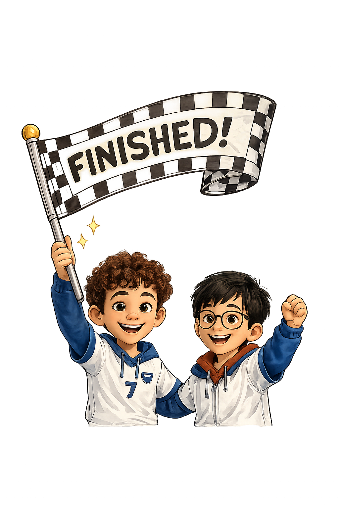

Pre2 Cat Projects
Choose a project.

BigCatPre2Read two-digit numbers and choose the word form.Number Words CatBlocksPre2Colour base-ten blocks to show target numbers.Base Ten CatMazePre2Build 13 + 4 with tens and ones.Addition CatPolePre2Build numbers with hundreds, tens, and ones.Place Value CatStringPre2Order numbers from least to greatest.Ordering FairCatPre2Compare numbers with greater than, less than, or equal to.Comparing LineCatPre2Solve a number line question.Number Line OrderStackCatPre2Order numbers in a focused Pre2 activity.Ordering SkipCatPre2Skip count by 2s, 5s, and 10s.Patterns SpaceCatPre2Use a hundreds chart to solve addition.Addition TreeCatPre2Show numbers using tens and ones.Base TenUpload this whole folder to GitHub/Netlify. Each activity submits to Netlify and returns here.